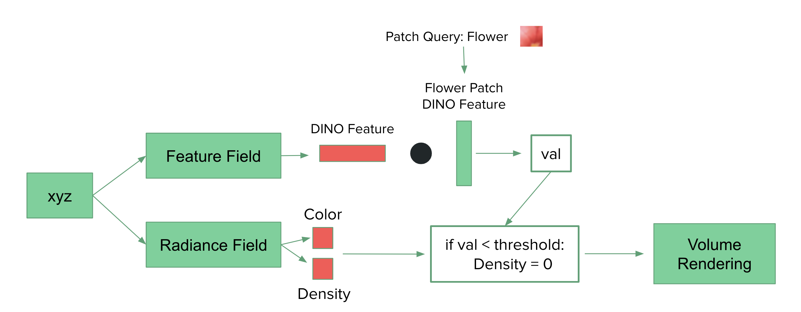
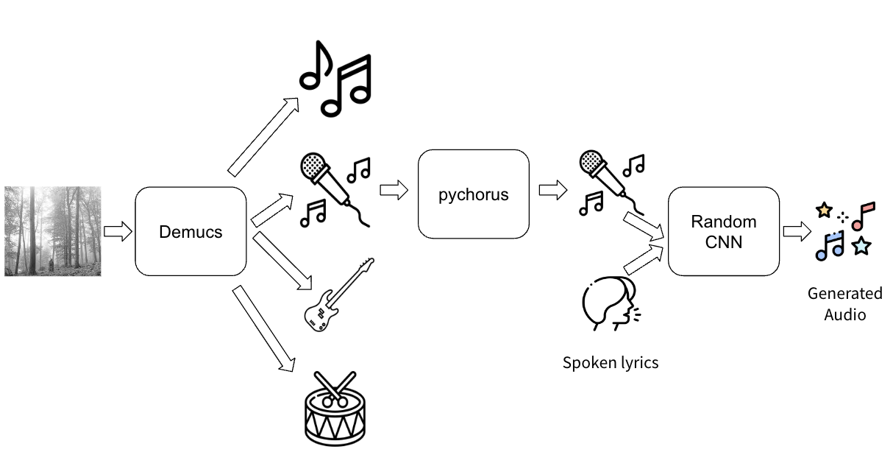
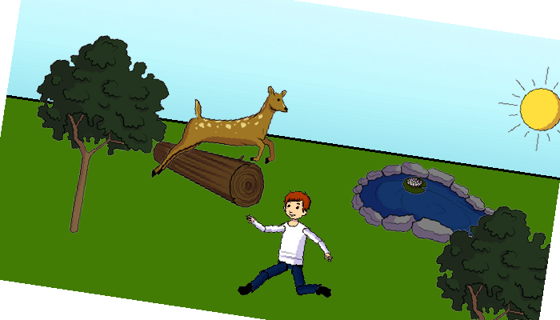
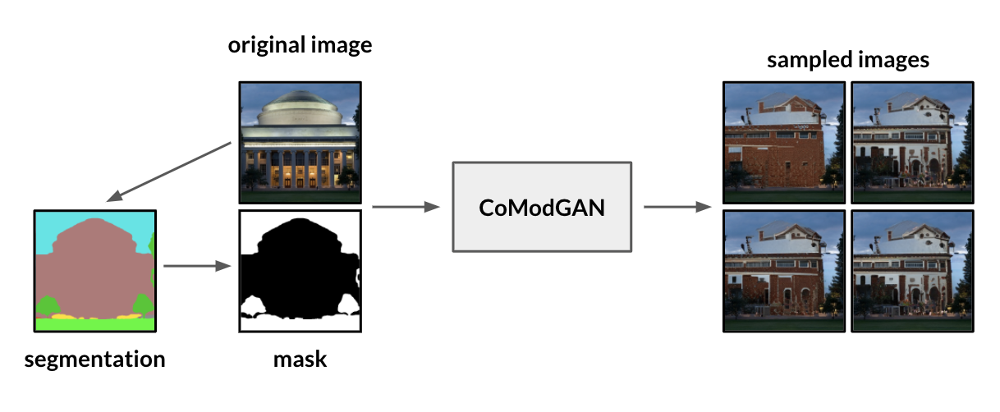
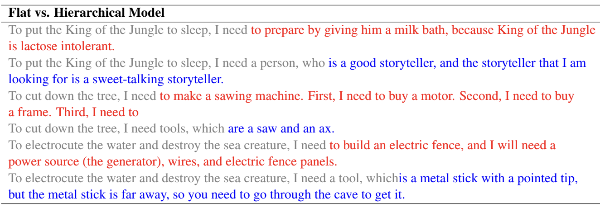
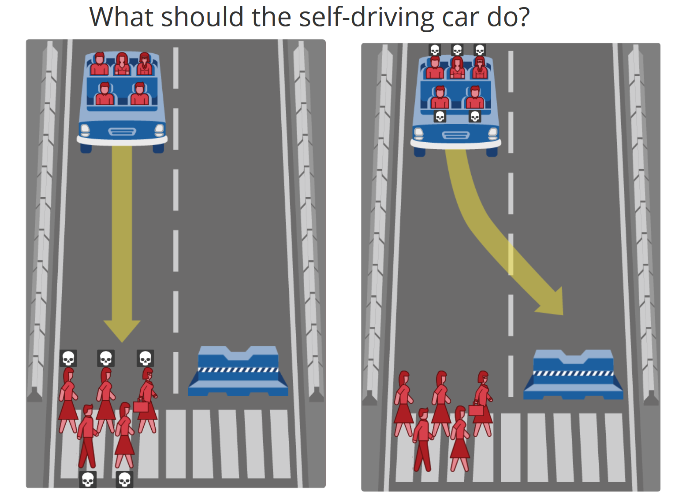
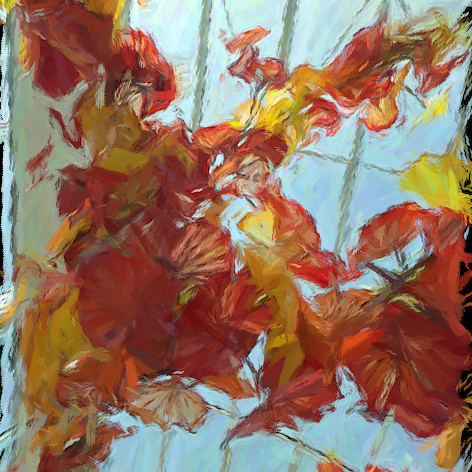

|
|
|  |
Machine Learning for Inverse Graphics (6.S980) Final Project, Fall 2022 Website / Code Rendered and extracted features from 3D scenes that include transparent objects using TensoRF and feature field distillation. |
|  |
Spoken Language Processing (6.345) Final Project, Spring 2022 Paper / Presentation Inspired by neural style transfer in vision, I applied these methods to speaking-to-singing style transfer. |
|  |
Computer Vision (6.869) Final Project, Spring 2022 Paper Analyzed biases in binary VQA models by evaluating the accuracy and consistency of VQA model on modified question and image inputs. |
|  |
Deep Learning (6.S898) Final Project, Fall 2021 Website Examined shape and color biases in co-modulated GANs. |
|  |
Natural Language Processing (6.864) Final Project, Spring 2021 Paper / Poster / Code Explored how constraints and hierarchical planning influence diversity and creativity of GPT-3 generations. Later, resulted in a publication. |

|
Optimization Methods in Business Analytics (15.053) Final Project, Spring 2021 Paper / Code Created an optimization model to optimize for the best class schedule. |
|  |
Computational Cognitive Science (9.66) Final Project, Fall 2020 Paper / Code Added a new layer of abstract qualities to the model and analyzed moral behaviors of participants in East Asian countries. |
|  |
Computational Photography (6.815) Final Project, Fall 2020 Paper / Code Implemented single scale and single scale oriented paint. |